2026
Giving AI agents the business context to act on what people mean
I'm a design leader and product strategist helping put complex technology to work for people.
I'm the founding Chief Design Officer and Futurist at Domo. For 15 years, I've helped shape our cloud-native, mobile-first data analytics platform and, more recently, its approach to governed, agentic AI.
My focus is now on developing systems of context, knowledge, observability, and generative UI for agentic applications – understanding how agents work (or don't), who's using them, and what those people need to accomplish, then encoding the UX/UI judgement that's perfect for them.
Personalization is the new productivity. Enterprise software has long asked people to adapt to its way of working. I'm working toward software that adapts to each person's way of working.
A curated selection of work, with more on the way...
Giving AI agents the business context to act on what people mean
Shared definitions and relationships that help people and agents understand the business
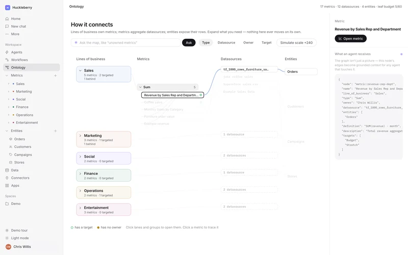
A visual canvas for designing, generating and publishing data apps
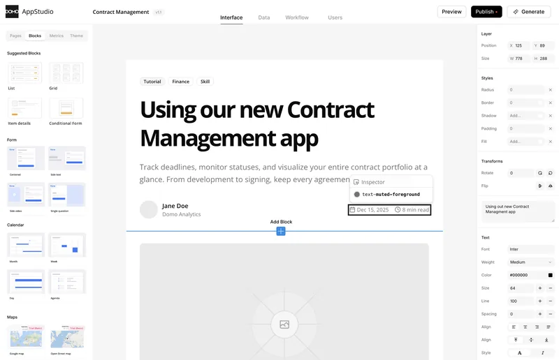
A unified data grid for fast, frictionless exploration of DataSets of any size
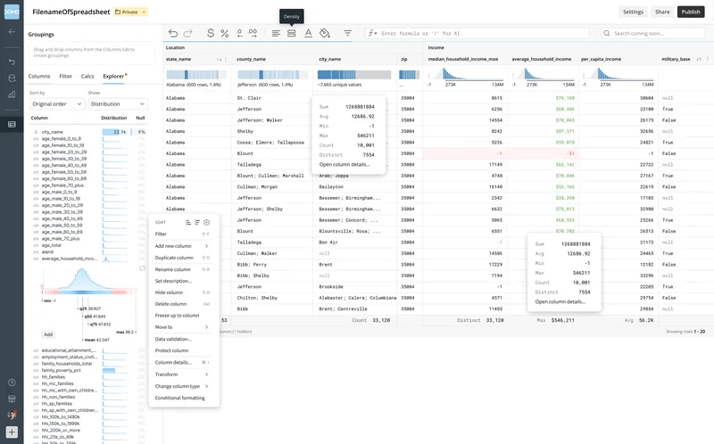
Showing people what to fix before their data meets AI
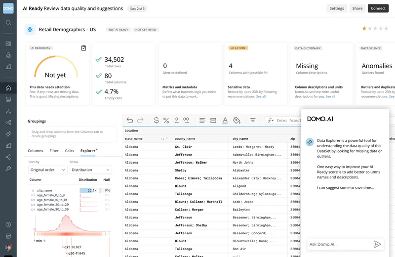
Turning business automation into flows anyone can read and edit
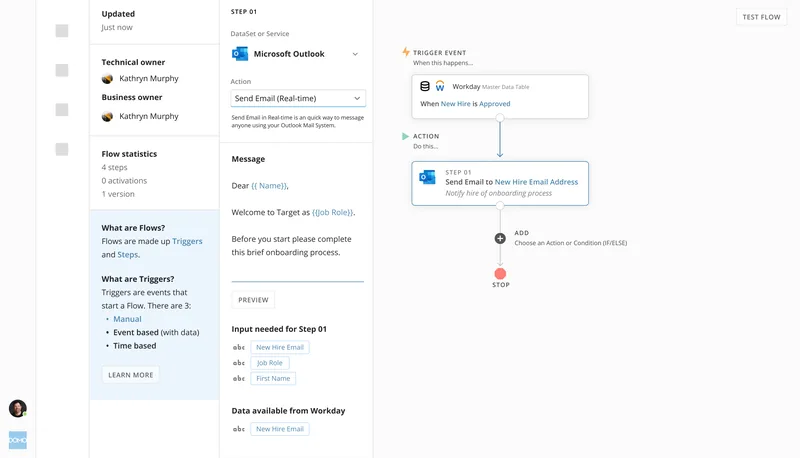
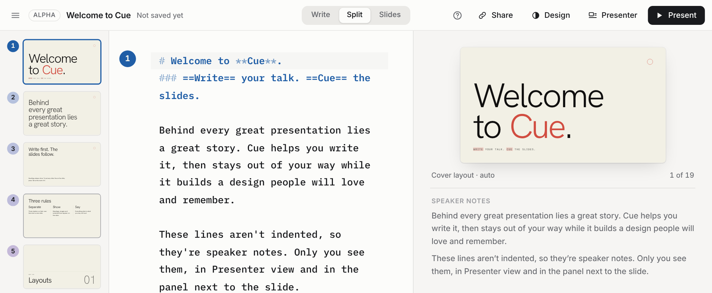
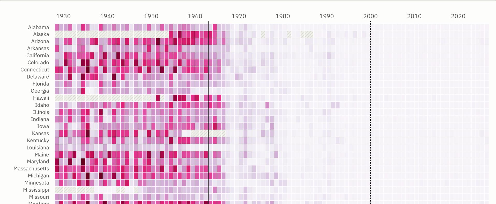
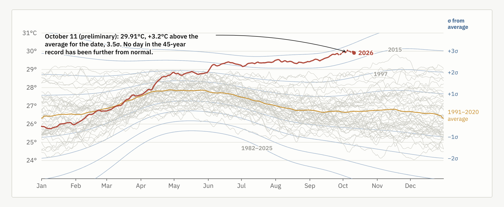
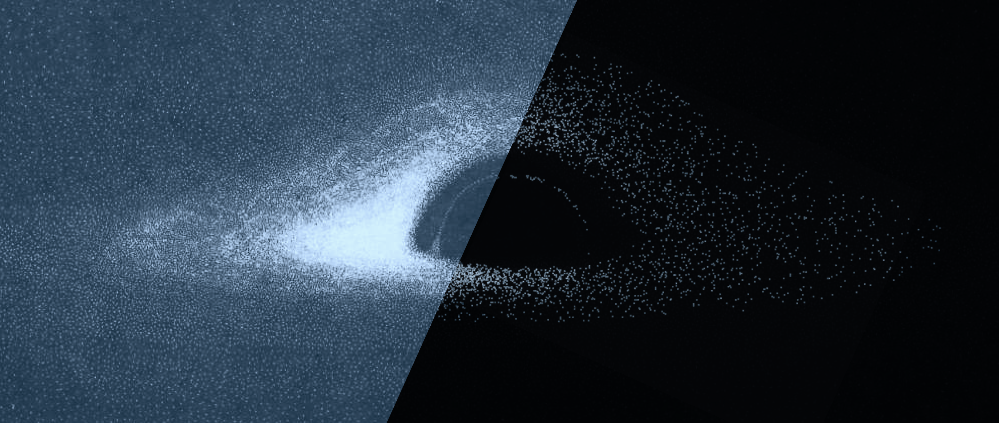
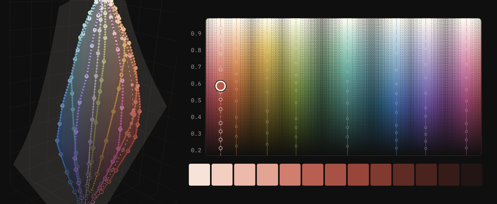
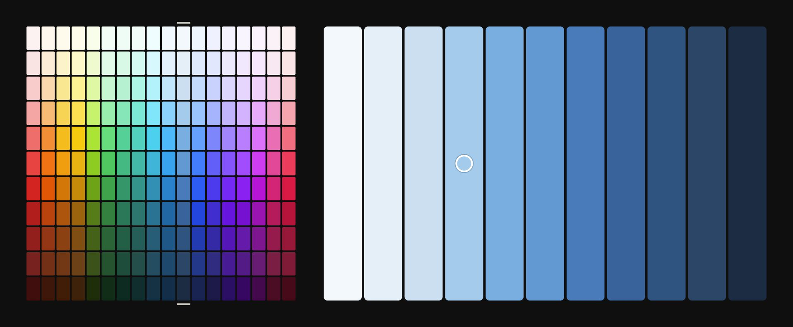
50+ TV and podcast appearances in 2026 on human-AI collaboration, the future of work and emotional design.


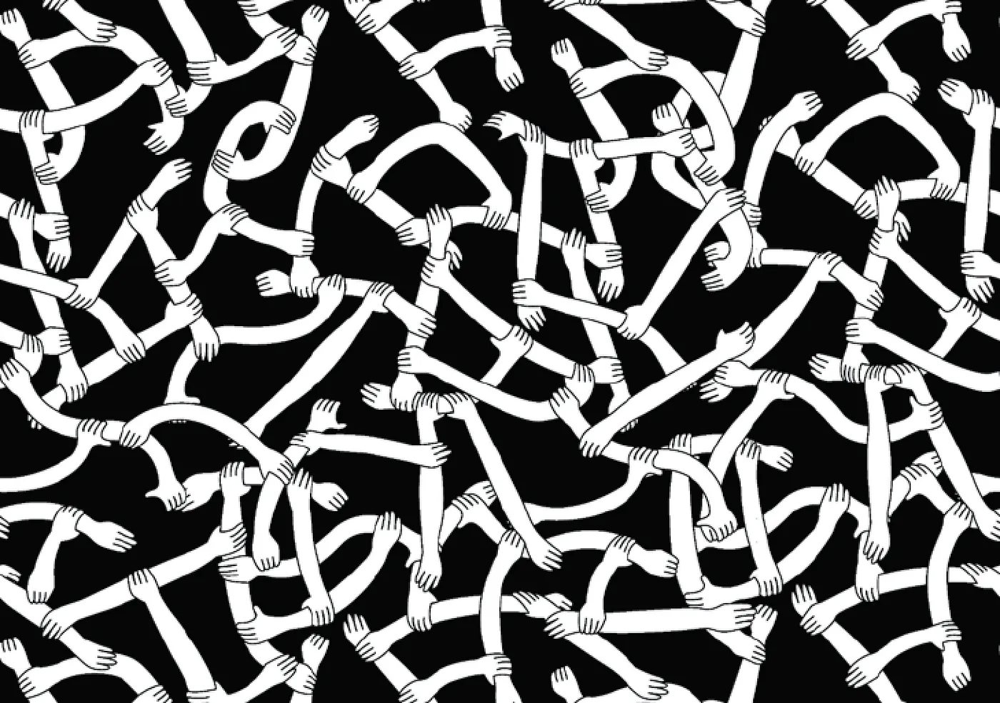
The full story is on LinkedIn.
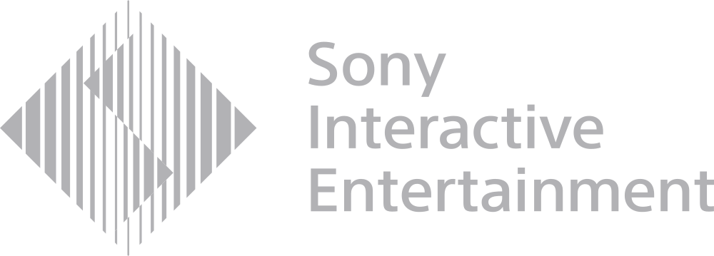
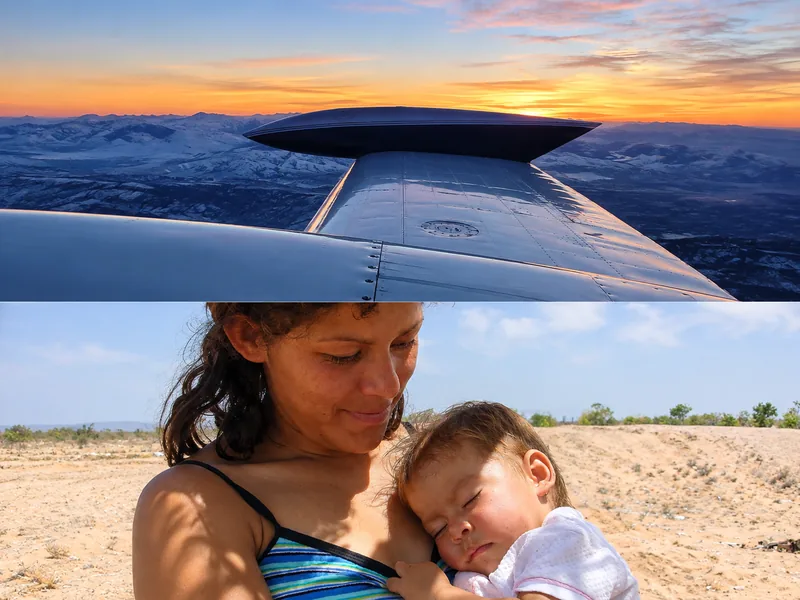
If you're building the future of work, or just looking for a spirited chat about it, let's talk.